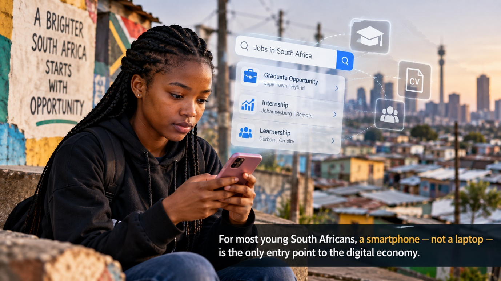
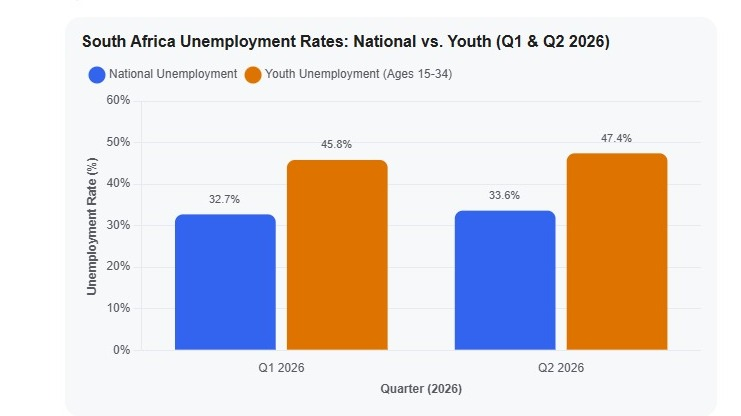
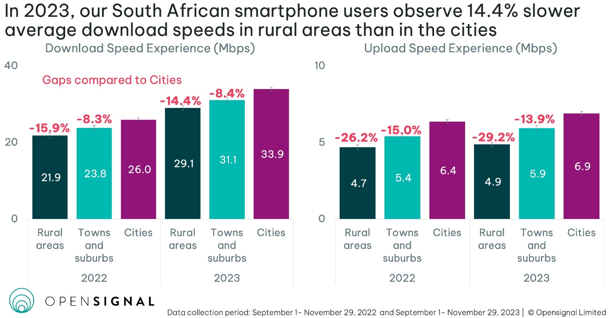

South Africa has already run one of the world's largest experiments in using artificial intelligence to fight youth unemployment, and the results should worry us.
The Harambee Youth Employment Accelerator's SA Youth platform, which has now been officially taken up by the government as the country's national job-seeking network, has helped over four million young people and linked more than 1.4 million of them to employment opportunities (Co-Impact, 2026). Its WhatsApp chatbot, Coachmee, uses natural language processing to help job seekers get coaching all the time (Davidoff, 2023), and previous AI-powered conversation tools increased sign-up rates by 20% (AI21, 2025).
According to the latest Quarterly Labour Force Survey by Statistics South Africa, the rate of youth unemployment increased to 47.4% in the second quarter of 2026, which is higher than the 45.8% recorded in the previous quarter (Statistics South Africa, 2026a, 2026b). Unemployment has, if anything, become even worse even though platforms like this have expanded across the country (Techpoint Africa, 2021).

A national experiment that's still not working
This is not saying AI is bad; it is showing the issues people have been talking about with AI. Matching platforms are a type of intervention on the demand side that help people find existing jobs faster. They cannot create jobs that do not exist, and they cannot give someone a skill they never learned. South Africa's main problem is not that people are not being matched well; it is that there aren't enough entry-level jobs and that many young people do not have the skills needed for the jobs that are available. The more important question is what AI can do for the supply side, by creating skills and job opportunities in areas where there are none right now.
Why this is a Fifth Industrial Revolution problem, not a Fourth
I am framing this through the lens of the Fifth Industrial Revolution (5IR) rather than the Fourth. The Fourth Industrial Revolution, popularised by Klaus Schwab, describes technologies such as AI and automation that fuse the physical, digital and biological worlds, largely in service of efficiency and productivity (Schwab, 2016). That is exactly what SA Youth's matching algorithms already do well.
The 5IR, created by the European Commission, focuses more on people. It wants technology to be centered around humans, strong and helpful for people's health and happiness, not to take over decisions that people should make (Breque et al., 2021). A tool that helps a young person develop a real, personal skill or start their own small income source, while keeping a human in charge of the decisions, fits well within 5IR, not 4IR's focus on efficiency and automation.
What personalized, human-centred AI could add.
Two underused technologies fit this frame. AI-driven personalized upskilling can diagnose an individual's specific skill gaps and generate a tailored learning path, rather than a generic course. Low-code/no-code development platforms, paired with AI coding assistants, let someone with no formal computer science training build a functioning app or small digital service, lowering the capital and technical barriers to self-employment. Both have a person in the driver's seat: the AI suggests, but the person makes the final choice. That is the 5IR difference that is important here.
The catch: who gets left behind
These tools are not neutral. Algorithms that learn from past data can copy any unfair advantages or disadvantages that were already present in that data. Amazon is well-known for stopping the use of a hiring tool that gave a negative score to any resume that included the word "women's" (Sheard, 2025). An AI-based system for checking skills or credentials could end up treating students from schools with few resources or from rural areas the same way, without realizing it. This might actually make it harder for them to get noticed, instead of helping them out.
There's also a basic problem with access: using these tools well usually needs a smartphone, good data connection, and confidence with digital stuff, but none of these things are available to everyone equally.
Is South Africa ready?
Some of the basic steps are getting better: the government has removed a tax on smartphones priced under R2,500, which has helped more people get their first smartphones (Connecting Africa, 2025), and mobile broadband now covers most of the population. In 2025, only 30.7% of rural areas had 5G coverage, which is much lower than the higher rates in urban areas (Ecofin Agency, 2026). Also, the cost of data is still a big problem for the young people who are supposed to benefit from these tools. Readiness, in other words, is very unequal; a person who leaves school in a well-connected city and one who leaves in a rural village do not begin from the same starting point.

The real test
South Africa does not need another app that helps people find jobs. It needs AI focused on the more difficult and slower task of creating new skills and chances that do not exist yet, and it has to be used in a careful way so it does not exclude the younger people it is supposed to support.